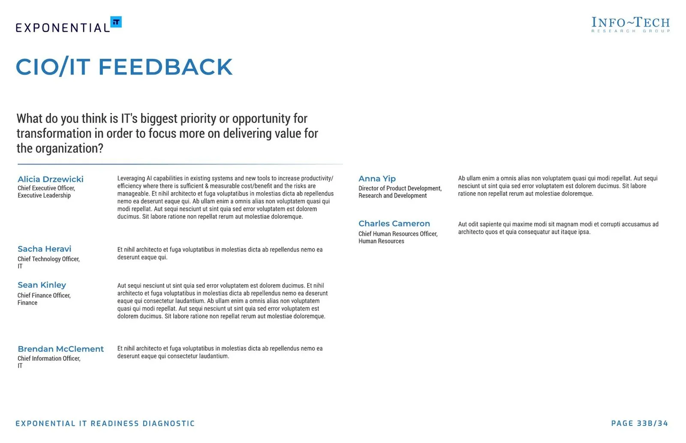
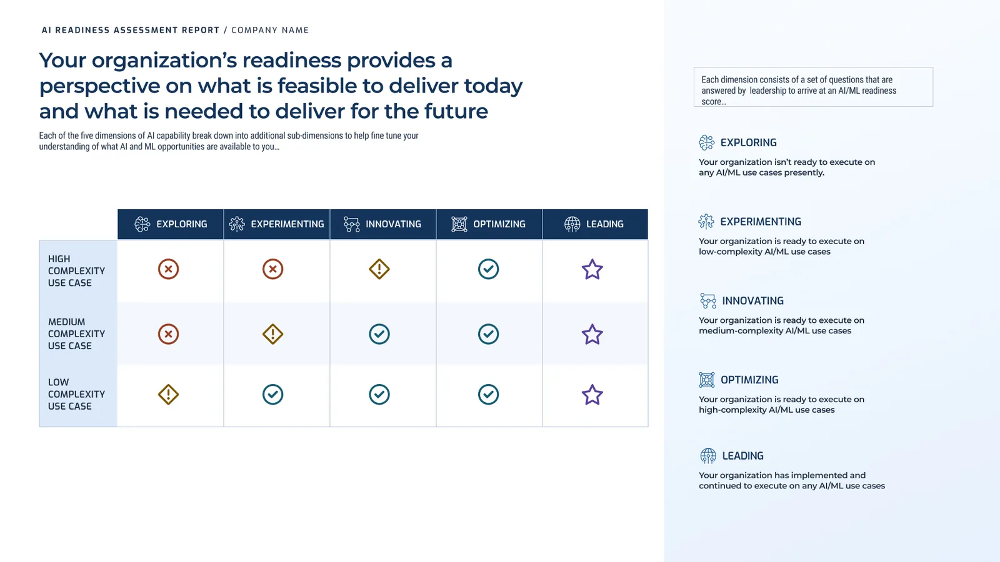
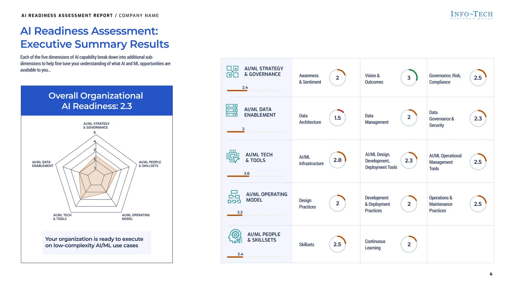

Diagnostic Reports
Report designs that turn diagnostic survey results into clear findings IT leaders can act on.
- Company
- Infotech
- Timeline
- 2024–2025
- Tools
- Figma · Illustrator · Photoshop
- Format
- Multi-page reports
About this work
Infotech diagnostics are surveys that IT leaders and their teams complete about how their department runs. Each one produces a report that scores the organization against best practice, shows where it is strong and where it is falling behind, and recommends what to do next.
The reports have to carry a lot: dozens of scores, maturity levels, benchmarks and recommended actions. My job is to make that data read clearly. I design the page layouts, the charts and scorecards, and the visual system that keeps a long report consistent and easy to navigate.
Selected reports
Exponential IT Readiness Diagnostic
A report comparing how ready the organization is for technology-driven transformation with how ready IT is to lead it, scored across core IT domains.
I designed the complete report and was partway through coding it when the project was cancelled, so this design was never published. Shown with sample data.


Each IT domain gets a page: an overall score up front, then every stakeholder's response.

Highest and lowest scores are split so disagreement between leaders stands out.

The headline finding: where the organization sits on org vs IT readiness, and what that means.


Open-ended feedback, kept readable with clear attribution for each leader.
AI Readiness Assessment Report
A rapid assessment that shows an organization how ready it is to take on AI and machine learning, and what kind of AI projects it can realistically deliver today.
Many IT leaders are under pressure to “do something with AI” without knowing whether their data, tools, people and governance can support it. This report answers that question. Leaders rate their organization across five dimensions: strategy and governance, data, technology and tools, operating model, and people and skills. The report turns their answers into a readiness level, from Exploring to Leading, and shows which complexity of AI use case they are ready for, with recommended next steps for each dimension. I designed the full report and the design was approved, but it didn’t move into development. Shown with sample data.


The framework: five dimensions of AI capability, each broken into sub-dimensions, and five readiness levels.


What each level means in practice: which complexity of AI use case an organization can take on.


The executive summary: an overall score, a radar chart across the five dimensions, and every sub-dimension score at a glance.

A dimension page: the score and what it means on the left, the detail and recommended research on the right.

An alternative layout for the same page, with the summary across the top to give the detail more room.
Created for Infotech. Shown with sample data.